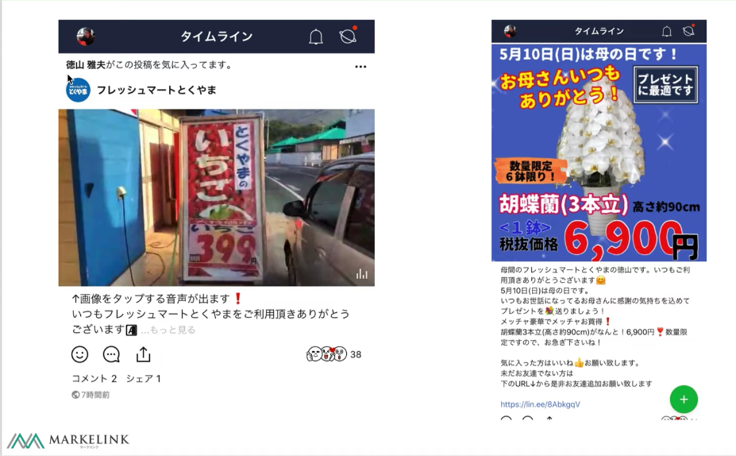
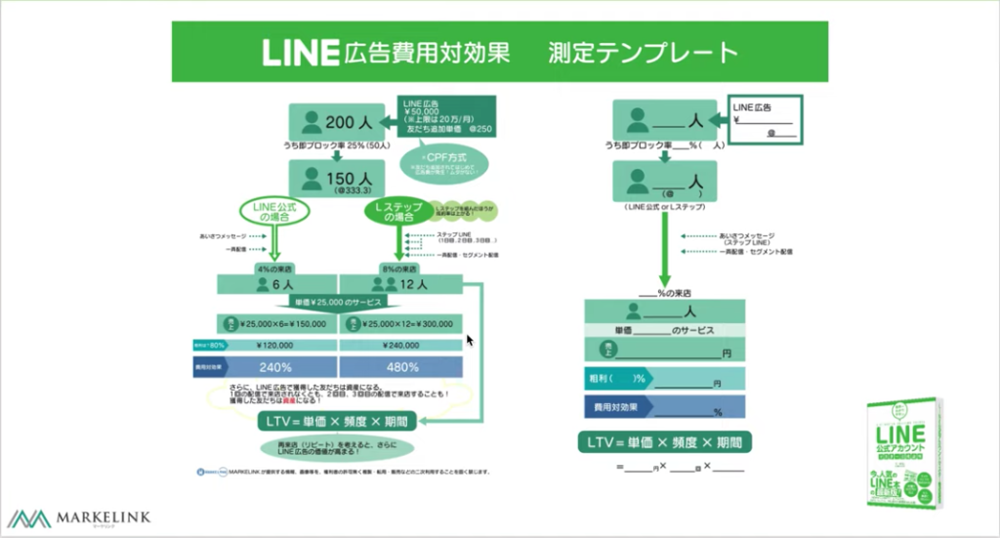
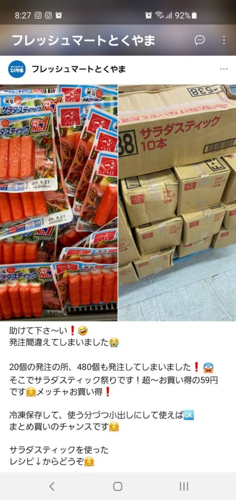
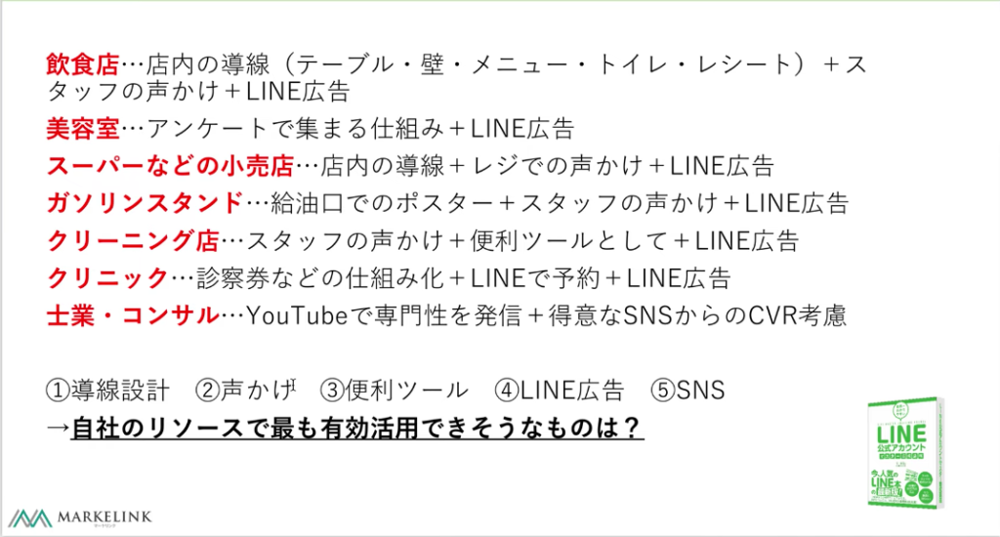
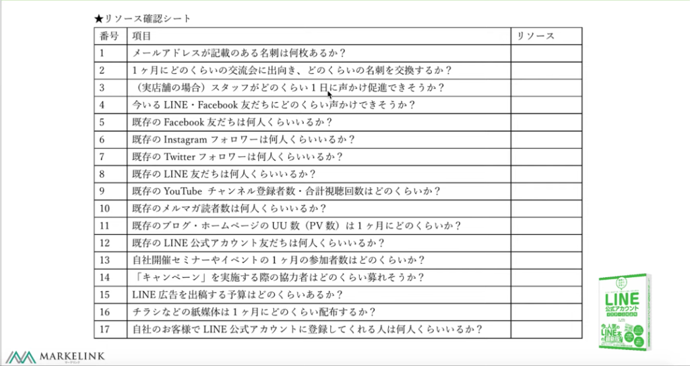
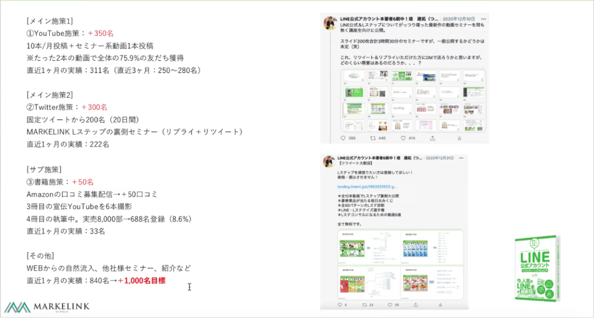

#024 LINE友だちを集める攻略方法-3

こんにちは！matsumotoです。いよいよ、LINE公式アカウントの友だち集めのコツ、最終章となります。
ここまで読んでいただき、正直「あんまり参考にならないな・・・。」と思っておられる方もいるかもしれません。ご紹介した友だち集めのコツは、どれも手間隙かけてやっても最終的に友だち登録してもらえる率は数%、とけっして高い率ではありません。
（１）友だち登録数を増やすのは、本当に大変！
ここでご理解いただきたいのは「友だちを増やしたいのなら、手間隙はかかる」という点と、その「費用対効果数パーセント」をいかに確実に取っていくか、という点です。また、最初は投稿や配信内容にこだわり、時間をかけて投稿・配信しますが、ある程度友だち数が増えてくると対応等で手に負えなくなるという状況に陥っていきます。
そのために、いま一度LINE公式アカウントが持つ機能や有料運用ツールの使い方をきちんと把握し、どのように登録数を集めるか、という自分自身の導線を明確に設計して実行しましょう。（matsumotoの過去のブログ記事でも解説していますので、ぜひご覧ください！）

各広告ツールごとの費用対効果については、上のような測定シートがあります。少し複雑な内容になりますが、かなりシビアな現状の分析や、今後活用していくべきツールが明らかになります。ご利用したいとお考えの方は、ぜひmatsumotoまでご相談ください！
（２）タイムライン投稿×２回で友だち25人ゲット！
では、ここでは人口2万人の徳之島にある『フレッシュマートとくやま』というスーパーマーケットの公式アカウントの”タイムライン”での投稿の実績をご紹介しますね。
公式アカウントのタイムライン投稿は無料ですが、友だちが「イイネ！」してくれると、友だちの友だち（直接友だち登録してもらっていない他人）にまでそれが通知されるようになっています。
↑こんな風に通知されます
事例①
アカウント開設後2ヶ月で友だち人数が250人ほどの頃の話です。タイムラインの平均インプレッション数（見られた回数）がコンスタントに3000回以上はありました。その中には10,000回以上見られた投稿もありました。
事例②
2020年の3月に投稿した時の話です。2回投稿したのですが、55クリックで 34,416インプレッション付きました。クリックしてくれた55人のうち25人が友だち追加してくれました。
事例③
ある日サラダスティック（カニカマ）を20個仕入れるはずが誤発注してしまい20ケース（480個）仕入れてしまいました。公式アカウントのタイムラインに山積みになったサラダスティックの写真付きで「間違って20ケース仕入れてしまいました！賞味期限は一週間なので買いに来てください💦」という投稿をしたところ、225いいね！＆2,5000 インプレッションがありました！（Lステップで確認できます）
上の画像の通り、すでに登録してくれている友だち（仮にAさん）がその投稿にイイネ！をし、Aさんの友だちにもそのことが通知されて、面白がった人たちが次々に投稿を見てくれたようです。
結果的に、カニカマはその投稿から二日目にすべて完売しました。この投稿にはもうひとつ工夫がされており、山積みの商品の写真と別にカニカマを使用したレシピを一緒に投稿していました。ただ単に「助けてください！」ではなく調理方法を投稿したこともタイムラインの有効な使い方だったということです。
このようにタイムラインは投稿する内容次第では大変おおきな反響があります。バズるネタを探すのではなく普段からコツコツ投稿し自社（自分自身）のファンを増やしていくことにより、数ある投稿の中から注目を集める記事が出てくるのです。
「たかがタイムライン」といえど非常に大勢の目に触れるチャンスがあることを理解してもらえましたでしょうか？日頃から画像や文章など工夫を凝らすのはもちろん、このようにいつ何が起きても友だち登録につなげられるよう、公式アカウントの機能を最大限活用しましょう。

（３）まとめ
以上、３回にわたってLINE公式アカウントの友だち集めのコツについて解説しましたが、いかがでしたでしょうか。下は、友だち登録してもらうために効果的なツールを業種別にまとめたものです。

やはり飲食・小売などリアル店舗は、お客様に直接「友だち登録お願いのお声がけ」を出来るというのが強みですね！ そのほかの業種でもLINE公式アカウントの機能や広告をうまく活用し、自社が一番得意としているリソース（SNSやWEB・YouTubeなど）は何か、洗い出しをおこなって強化しましょう。それによって友だちを集める導線を詳細に設計します。
リソースについては、下のチェックリストを活用してください。あなたの公式アカウントが活用すべきツールが明らかになります。

リソースがわかったら、友だち登録への導線（施策）を複数考えておき、それぞれを組み合わせて何人程度の友だち登録を目指すか、明確な目標を立てましょう。

たとえば、YouTubeのセミナー系動画などは観てもらえる確率が高いです。Matsumotoの先輩コンサルタントは、ツイッターでイイネやRTをしてくれた人にだけYouTube限定公開のセミナー動画をDMで送るとつぶやき、１ヶ月に200〜300人もの友だち登録をゲットしました。
このように、YouTubeが効果的だからといってそれだけに頼るのではなく、すでに持っているリソースと組み合わせて効率よく活用し、長期的に取り組むことが大切です。先輩コンサルタントは、WEBからの自然流入ほか、各地でPRして先月は840名友だち登録があったそうです。
このあたり、「明確に数字を割り出すのが難しい」「想像がつかない💦」という場合は、ぜひmatsumotoを画面下のボタンから友だち登録していただき、初回60分無料相談メリットを活用してご相談ください！一緒にあなたのアカウントの課題と強みを洗い出し、配信や広告のコツなど、丁寧にサポートさせていただきます！！
まずはLINE公式アカウントを開設しましょう！
●LINE公式アカウントの開設方法はこちら
●LINE公式アカウントをオススメする理由はこち
●LINE公式アカウントでできることはこちら
●Lステップでできることはこちら